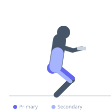
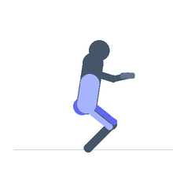

Exercise guide / Heel-Elevated Goblet Squat
Heel-Elevated Goblet Squat
A goblet squat performed with the heels raised on a wedge or plates. Heel elevation reduces ankle dorsiflexion demands, allows greater squat depth, and shifts loading emphasis further toward the quadriceps — particularly the rectus femoris — while reducing hip flexor and lower back involvement.
Primary muscles
rectus femoris
vastus lateralis
vastus medialis
vastus intermedius
gluteus maximus
Secondary muscles
biceps femoris long head
erector spinae
Stabilizers
transverse abdominis
gastrocnemius medial
Equipment
Dumbbell (Fixed)
Weight Plates
Optional
Kettlebell


Starting position
- Stand with heels raised on a 25lb plate or squat wedge, feet shoulder-width apart. Hold a dumbbell vertically at chest height with both hands cupping the top end.
Setup
- Place a 25lb plate flat on the floor. Stand on it with just the heels. Hold a dumbbell at chest height.
Steps
- Step 1: Brace your core and keep the dumbbell tight to your chest throughout.
- Step 2: Push your hips back and down, keeping the torso upright.
- Step 3: Descend to full depth or until thighs are parallel to the floor.
- Step 4: Drive through the entire foot to stand, squeezing the glutes at lockout.
Coaching cues
- Sit between your heels
- Chest up, elbows down
Breathing
- Inhale as you descend. Exhale on the way up.
Range of motion
- Aim for full depth (hips below knees). The heel elevation makes this more accessible for those with limited ankle mobility.
Tempo
- 2-1-2-0
Common mistakes
- Letting the knees cave inward at the bottom
- Leaning the torso excessively forward
Safety
- Ensure the plate or wedge is stable and will not slip before adding significant load
Training
- strength: 3–8 reps
- hypertrophy: 8–15 reps
- strength: 3–5 sets
- hypertrophy: 3–4 sets
- Rest: {'strength': 180, 'hypertrophy': 90}